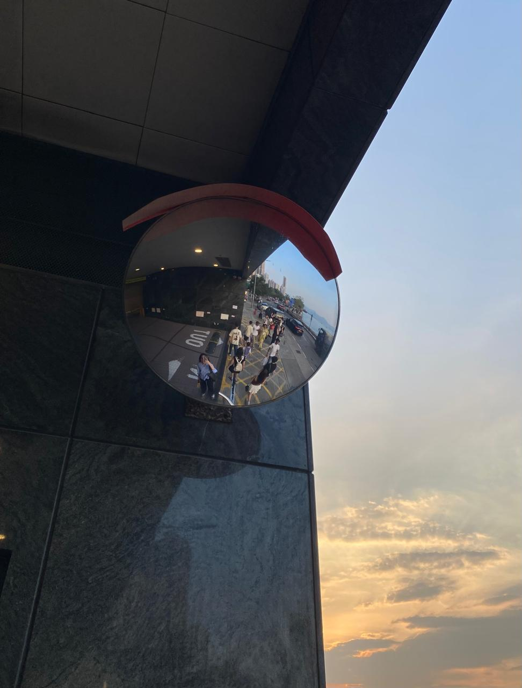
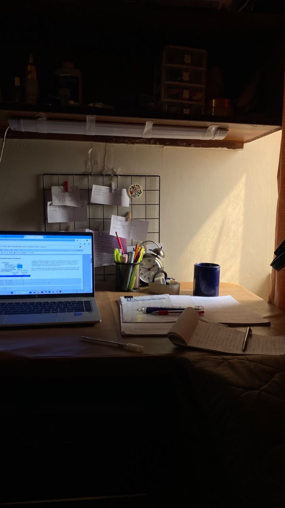
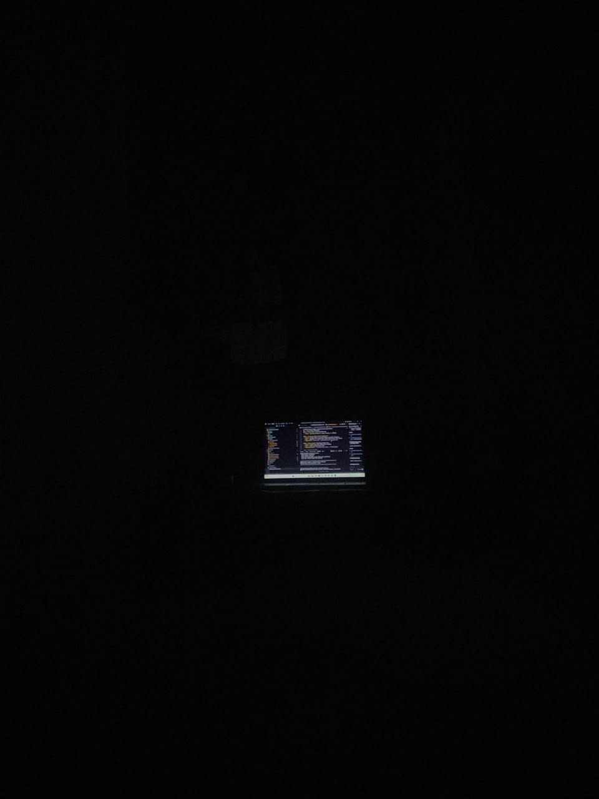
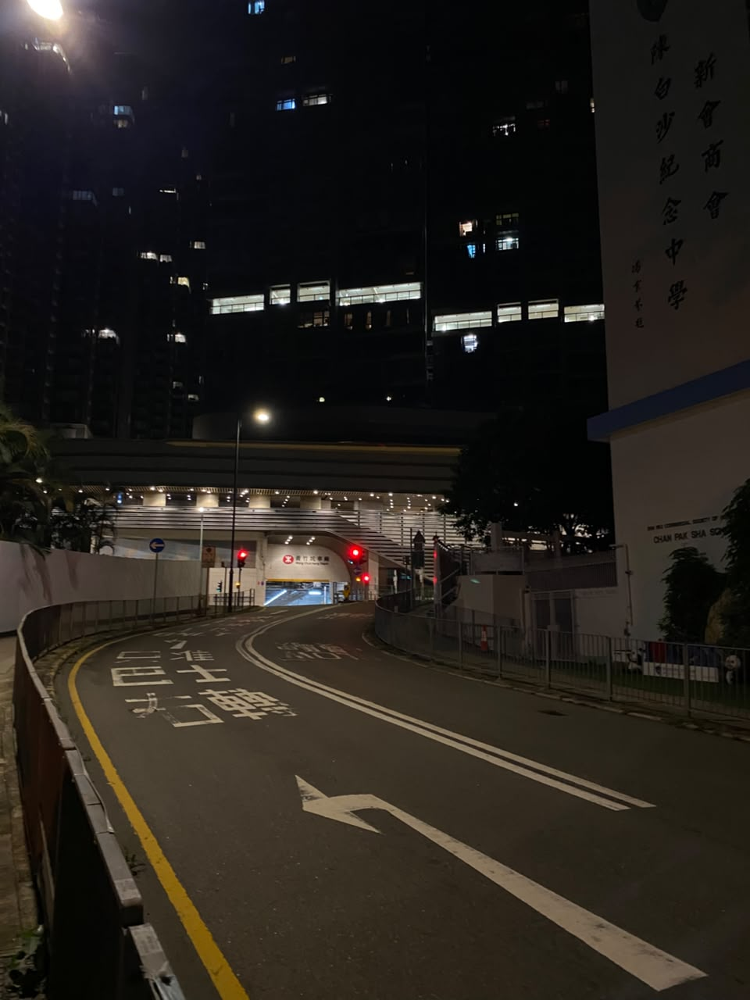
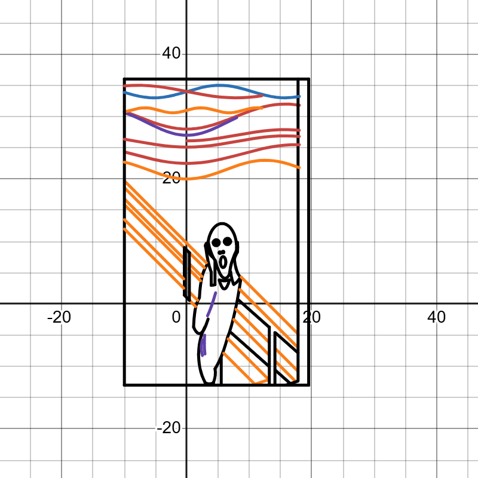

01 - About Me
I am a Software Engineering student at NUST who enjoys learning, building software and connecting technical ideas with real life.
A visual collection representing some of the things I enjoy working on and exploring, from mathematics and software engineering to books and new places.

About Me

The Journey

Code & Development

Hobbies & Exploration

Problem Solving
I am a Software Engineering student at NUST who enjoys learning, building software and connecting technical ideas with real life.
Software Engineering at NUST is helping me explore programming, data, automation and modern web development while I discover where I want to specialise.
Software development allows me to convert ideas and problems into structured, working systems.
I enjoy reading, walking and exploring new places in my free time, finding fresh perspectives and small details beyond my routine.
Challenging problems and equations help me practise analytical thinking, pattern recognition and creative problem solving.